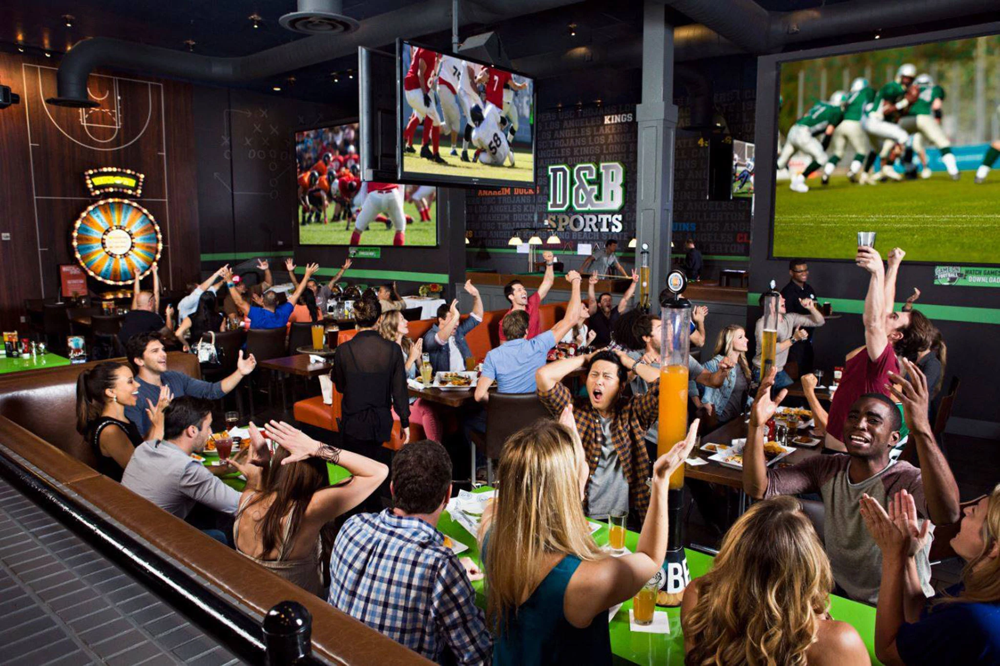

מהי Show Time?
Show Time היא פלטפורמה דיגיטלית חדשנית המחברת בין אוהדי ספורט לבין ברים, מסעדות ופאבים המשדרים אירועי ספורט בזמן אמת.

הבעיה שאנו פותרים
במקום לבזבז זמן בחיפושים ברשתות החברתיות או להתקשר למקומות שונים, המערכת מרכזת את כל המידע במקום אחד בצורה נוחה ופשוטה.
יתרונות למשתמשים
המשתמשים יכולים לצפות במידע על מקומות צפייה, לבדוק אילו אירועים משודרים בכל מקום, להתרשם מדירוגים וחוות דעת ולקבל החלטה מושכלת.
יתרונות לבתי העסק
המערכת מספקת לבתי העסק חשיפה לקהל יעד ממוקד של אוהדי ספורט, ומאפשרת להם למשוך לקוחות חדשים ולשפר את חוויית האירוח.
החזון שלנו
הפלטפורמה משלבת בין עולם הספורט, הבילוי והטכנולוגיה ומעניקה פתרון חכם המחבר בין אוהדים לבין מקומות בילוי בזמן אמת.
מעבר לעמוד החיפוש והאירועים